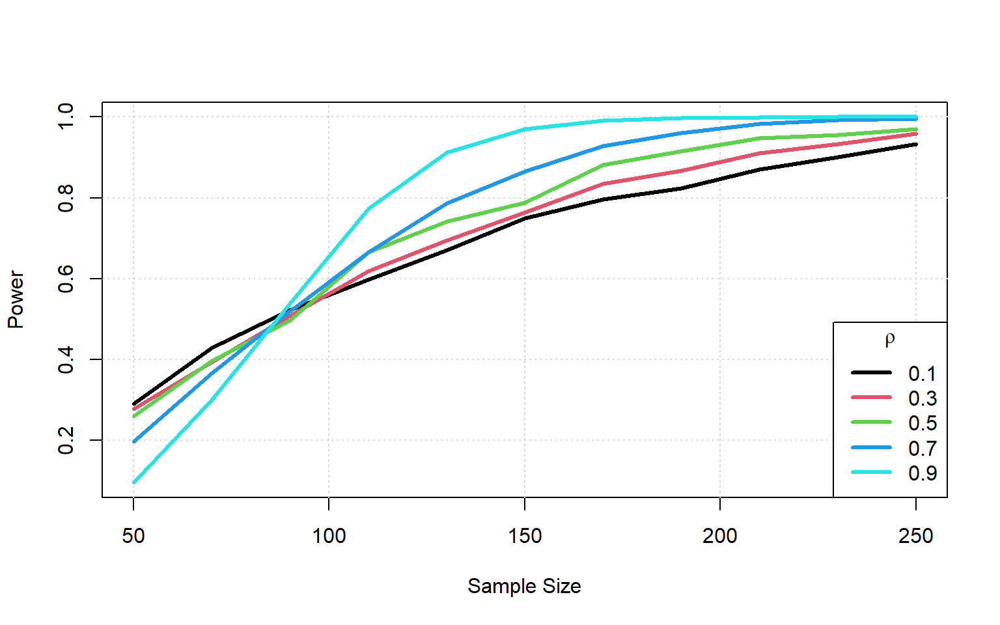
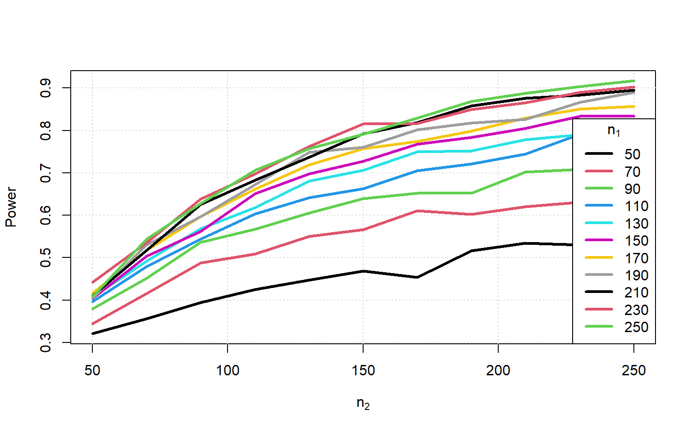
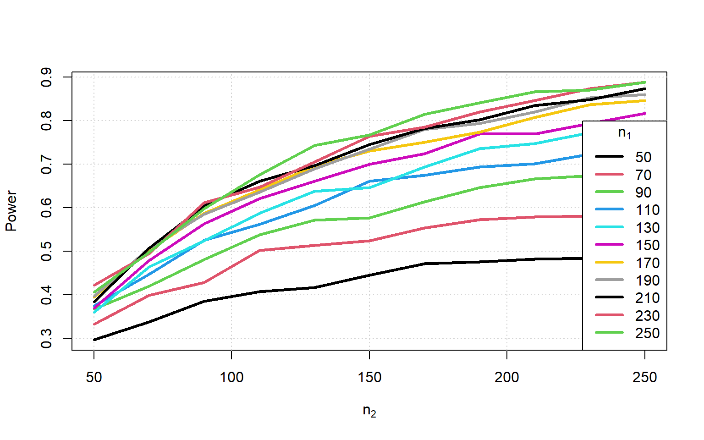
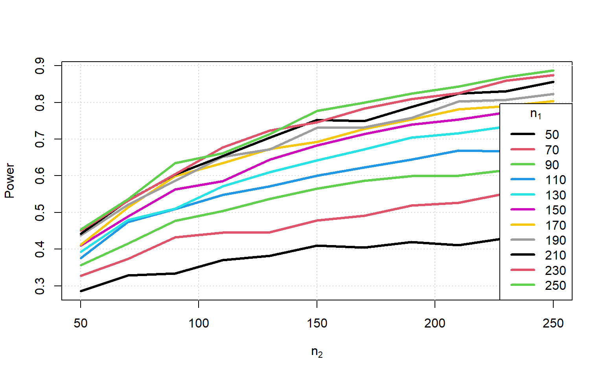

Code
n_datasets <- 2000
Sample_Size <- seq(10, 150, 10)
sim1 <- \(n, mu_d = 0.3, sigma_d = 1) {
rnorm(n, mu_d, sigma_d)
}Sean van der Merwe
2023-02-19
Assume the following:
I will be running a workshop called “Stats is fun” for a small number of participants. Before the workshop I will ask the participants “How enthusiastic are you about statistics?” and give them a scale from 1 to 5. Afterwards, I will ask the same people the same question and compare the responses.
The primary research question is whether the workshop had an impact on the enthusiasm of the participants for statistics.
Of course, as is, this question cannot be directly answered. We must clearly define ‘impact’ and how we hope to measure it.
We also need to define the framework we will attempt to use to answer the question as there are several options.
For this example we will stick to the classical (frequentist) hypothesis testing framework.
This framework is characterised by the following key components:
This framework has many severe flaws, far too many to discuss here, and yet in well designed experiments it does what it is meant to do: help us to talk less nonsense!
The real problem with it is how often it is misused and abused. All commonly used statistical hypothesis tests rely on at least two key assumptions:
These assumptions are violated far more often than they hold. Only the second one can be partially adjusted for.
The framework as discussed so far is entirely focussed on the sample and the null hypothesis; yet it is the population and the alternative that are of real world interest in most cases.
For a top journal to take your study seriously in many applied fields, you are required to do a power study in advance. Doing it retrospectively will bias the results.
Yet, power studies are often skipped for various reasons, such as the massive effort involved sometimes, and other constraints overriding the desired power.
Power studies are effort because they require you to describe the expected results of the study in extreme detail, and with uncertainty, prior to actually collecting any data.
There is a shortcut a lot of people like to use though: they cite similar studies with similar or smaller sample sizes that achieved significant results. While this is a logical argument, it does not account for publication bias.
Suppose we define ‘impact’ as the average difference in scores, then an obvious model is the t-test setup.
However, we would normally be getting responses on a discrete scale, not accurate real numbers. We will use the real numbers first to show the principle.
So, under the alternative I define the model and expected parameters as follows:
\[\begin{aligned} x_i &= \text{ before score for person }i \\ y_i &= \text{ after score for person }i \\ d_i &= y_i - x_i,\ i = 1\dots n \\ d_i &\sim N(\mu_d, \sigma^2_d) \\ \mu_d &= 0.3 \\ \sigma^2_d &= 1 \end{aligned}\]
where the numbers are chosen based on a combination of personal expectation and results from previous studies of a similar kind.
Our decision rule is that the p-value from a t-test comparing the average difference to zero \((H_0:\mu_d=0)\) is less than \(\alpha=0.05\).
The question to be answered first is, “What is the minimum sample size needed to obtain at least 80% power?”
In this simple scenario the question can be quickly answered using one of several power calculation packages in R. We will do it from first principles instead, for illustration and because scenarios can quickly stop being simple.
So the optimal sample size is 100.
Let us compare the paired data example above with what happens when the data isn’t matched correctly.
Suppose I forgot to ask each person for a unique identifier, so we still have the same sized samples but no longer paired. To make this a fair comparison, we keep the other factors the same.
To be realistic we incorporate some correlation between the responses for the case where we are able to partially line up the responses.
\[\begin{aligned} x_i &= \text{ before score for person }i \\ y_i &= \text{ after score for person }i \\ [x_i\ y_i] &\sim N_2([3.7\ 4], [1\ \rho; \rho\ 1]) \\ \end{aligned}\]

We note that only as the correlation approaches 1 (unrealistic) do we approach the same power we had as with the paired data. Paired data is more powerful.
Suppose now that instead of balanced samples with correlation, we had two independent samples of different sizes. This would occur any time we survey two different groups of people.
\[\begin{aligned} x_i &= \text{ before score for person }i,\ i=1:n_1 \\ y_j &= \text{ after score for person }j,\ j=1:n_2 \\ x_i &\sim N(3.7, 0.9) \\ x_j &\sim N(4, 1.1) \\ \end{aligned}\]
if (!file.exists("power3.rds")) {
Sample_Size |> sapply(\(n1) {
(Sample_Size |> sapply(\(n2) {
n_datasets |> replicate({
sim2sample(n1, n2) -> d_list
t.test(d_list[[1]], d_list[[2]])$p.value
})
}) < 0.05) |> colMeans() }) -> Power
Power |> saveRDS("power3.rds")
} else {
Power <- readRDS("power3.rds")
}
We now see that we need the smaller sample size to be larger than the combined sample size in the paired case to get close to the same power.
We would normally be getting responses on a discrete scale, not accurate real numbers. We will now use discrete numbers are compare to see the impact on power.
So, under the alternative I define the model and expected parameters as follows:
\[\begin{aligned} x_i &= \text{ before score for person }i \\ y_i &= \text{ after score for person }i \\ d_i &= y_i - x_i,\ i = 1\dots n \\ d_i &\sim roundedN(\mu_d, \sigma^2_d) \\ \mu_d &= 0.3 \\ \sigma^2_d &= 1 \end{aligned}\]
where the numbers are chosen based on a combination of personal expectation and results from previous studies of a similar kind.
Our decision rule is that the p-value from a t-test comparing the average difference to zero \((H_0:\mu_d=0)\) is less than \(\alpha=0.05\).
The question to be answered first is, “What is the minimum sample size needed to obtain at least 80% power?”
In this simple scenario the question can be quickly answered using one of several power calculation packages in R. We will do it from first principles instead, for illustration and because scenarios can quickly stop being simple.
So the optimal sample size is 100.
This is larger than before due to the measurement error.
Suppose now that we had two independent samples of different sizes. This would occur any time we survey two different groups of people.
\[\begin{aligned} x_i &= \text{ before score for person }i,\ i=1:n_1 \\ y_j &= \text{ after score for person }j,\ j=1:n_2 \\ x_i &\sim roundedN(3.7, 0.9) \\ x_j &\sim roundedN(4, 1.1) \\ \end{aligned}\]
if (!file.exists("power5.rds")) {
Sample_Size |> sapply(\(n1) {
(Sample_Size |> sapply(\(n2) {
n_datasets |> replicate({
sim2sample(n1, n2) -> d_list
t.test(d_list[[1]], d_list[[2]])$p.value
})
}) < 0.05) |> colMeans() }) -> Power
Power |> saveRDS("power5.rds")
} else {
Power <- readRDS("power5.rds")
}
Again we see that the measurement error lowers our power even further.
What if we used the Mann-Whitney test instead of a t-test?
if (!file.exists("power6.rds")) {
Sample_Size |> sapply(\(n1) {
(Sample_Size |> sapply(\(n2) {
n_datasets |> replicate({
sim2sample(n1, n2) -> d_list
wilcox.test(d_list[[1]], d_list[[2]])$p.value
})
}) < 0.05) |> colMeans() }) -> Power
Power |> saveRDS("power6.rds")
} else {
Power <- readRDS("power6.rds")
}
There appears to be only a tiny drop in power in spite of the change in hypothesis.
Suppose now that we want to test whether gender has an effect on the change in enthusiasm, while simultaneously still assessing whether the change is meaningful in the first place. We could try the following model:
\[\begin{aligned} x_i &= \text{ before score for person }i \\ y_i &= \text{ after score for person }i \\ d_i &= y_i - x_i,\ i = 1\dots n \\ d_i &\sim roundedN(\mu_{d_i}, \sigma^2_d) \\ \end{aligned}\]
But now we assume the following relationship, where \(g_i\) is a gender indicator variable with a value of 1 for female participants:
\[\begin{aligned} \mu_{d_i} &= 0.3 + 0.4g_i \\ \sigma^2_d &= 1 \end{aligned}\]
We now have two power curves and are interested in the lowest one.
if (!file.exists("power7.rds")) {
(Sample_Size |> sapply(\(n) {
n_datasets |> replicate({
y <- simreg(n)
g <- round(seq_len(n)/(n+1))
res <- coef(summary(lm(y ~ g)))
res[,4] < 0.05
}) |> matrix(ncol = 2, byrow = TRUE) |> colMeans()
})) |> t() -> Power
Power |> saveRDS("power7.rds")
} else {
Power <- readRDS("power7.rds")
}While the above models are all quite simple, the principles demonstrate translate to models of higher complexity. As long as you can follow the core steps then you can estimate power or required sample size.
Steps: